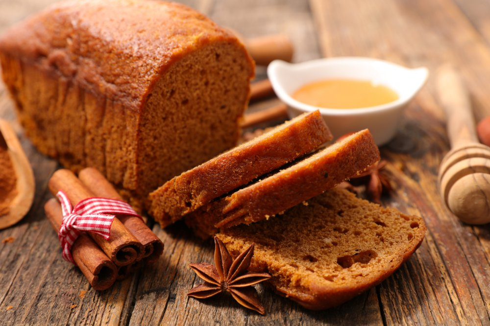
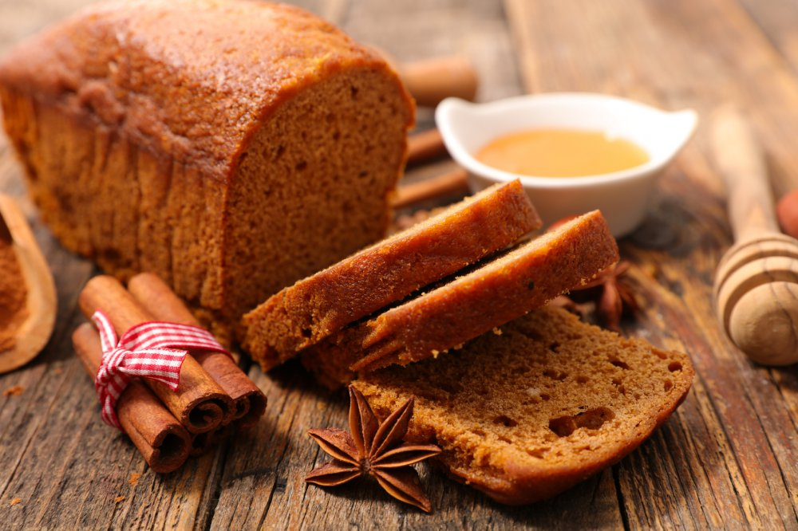

Bienvenue sur notre site dédié aux meilleures recettes sucrées de Noël ! Retrouvez ici des desserts gourmands et faciles à réaliser pour régaler toute la famille pendant les fêtes.
Découvrez notre recette phare : Bûche de Noël au chocolat.
Pour encore plus d’idées gourmandes, visitez : Recettes de Noël sur Marmiton .
Idées de desserts de Noël
- Bûche de Noël au chocolat.
- Sablés de Noël
- Pain d’épices
- Truffes au chocolat
- Cupcakes de Noël
 

Tableau des recettes
| Recette | Difficulté | Temps |
|---|---|---|
| Bûche de Noël | Moyen | 1h30 |
| Sablés de Noël | Facile | 30 min |
| Pain d’épices | Facile | 45 min |
| Truffes au chocolat | Très facile | 25 min |
| Cupcakes de Noël | Moyen | 50 min |